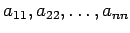

Berechnung von Determinanten
- 1. Wert einer Determinante 2. Ordnung:
-
- 2. Wert einer Determinante 3. Ordnung:
- Nach der Regel von SARRUS, die nur für Determinanten dritter Ordnung gilt, erfolgt die Berechnung mit Hilfe des Schemas
Die ersten beiden Spalten werden rechts von der Determinante noch einmal hingeschrieben. Dann wird die Summe der Produkte aller auf den ausgezogenen Schrägzeilen stehenden Elemente gebildet. Davon wird die Summe der Produkte aller auf den gestrichelten Schrägzeilen stehenden Elemente abgezogen.
- 3. Wert einer Determinante n-ter Ordnung:
- Die Determinante n-ter Ordnung wird mit Hilfe des Entwicklungssatzes auf n Determinanten (n - 1)-ter Ordnung zurückgeführt. Zweckmäßigerweise werden die einzelnen Determinanten mit Hilfe der Rechenregeln für Determinanten so umgeformt, daß möglichst viele ihrer Elemente zu Null werden.
Hinweis: Besonders günstig kann eine Determinante n-ter Ordnung berechnet werden, wenn sie in Analogie zur Rangbestimmung von Matrizen so umgeformt wird, daß alle Elemente, die unterhalb der Diagonalen  stehen, zu Null werden. Der Wert der Determinante ist dann gleich dem Produkt der Elemente auf der Hauptdiagonalen der umgeformten Determinante.